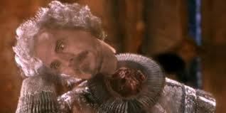
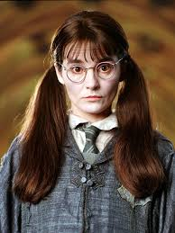
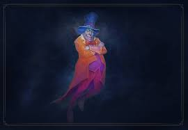

ECHOES OF THE PAST
Hogwarts is home to numerous ghosts, the imprints of departed souls who chose to remain in the mortal realm. From house ghosts like Nearly Headless Nick and the Bloody Baron to poltergeists like Peeves, they share the castle with the living, sharing tales of medieval times and ancient history.
CHARACTERS OF THE GROUP

NEARLY HEADLESS NICK
Gryffindor House ghost. Died from a botched beheading. Cheerful but sensitive about his neck.
THE BLOODY BARON
Slytherin House ghost. Covered in silver bloodstains. The only one who can control Peeves.


THE GREY LADY
Ravenclaw House ghost (Helena Ravenclaw). Stole the diadem and was murdered by the Bloody Baron.
THE FAT FRIAR
Hufflepuff House ghost. Jolly and forgiving. Executed for curing peasants with magic.


MOANING MYRTLE
Ravenclaw student killed by the Basilisk. Haunts the girls' bathroom and is prone to tantrums.
PEEVES
An indestructible spirit of chaos. Malicious and rude, obeying only Dumbledore and the Baron.


THE WAILING WIDOW
The Wailing Widow haunted a magical fountain. Her constant crying frightened travelers. Wizards feared her mournful screams. She was eventually exorcised.